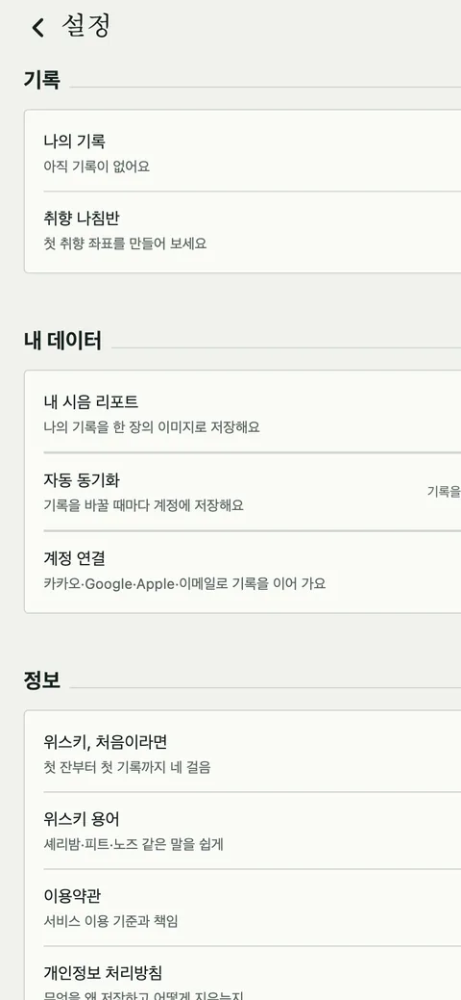

첫잔 [7] — 로그인보다 어려운 회원 탈퇴
카카오, Google, Apple 로그인은 반나절이면 붙습니다. 그 계정을 제대로 지우는 데는 하루가 걸렸습니다. 지우는 데 순서가 있고, 지우려면 로그인하는 순간에 미리 챙겨 둬야 하는 것이 있었습니다.
탈퇴 버튼은 한 시간
오후 1시에 설정 화면에 계정 항목을 넣었습니다. 로그아웃과 회원 탈퇴. 탈퇴 시트는 지워지는 것을 실제 숫자로 보여 줍니다. 기록 n건, 내 위스키 n병, 연결된 계정. 그리고 경고색 버튼 하나, '모두 지우고 탈퇴'. 서버에는 본인 행과 인증 계정을 지우는 함수 하나. 여기까지 한 시간이었고, 여기서 끝났으면 이 글은 없었습니다.

우리 DB를 지운다고 끝이 아니다
Apple 심사 지침 5.1.1(v)은 계정 삭제 기능을 요구하면서, Apple로 로그인한 계정이면 Apple 쪽 토큰도 회수하라고 합니다. 카카오도 마찬가지라, 우리 DB에서 사용자를 지워도 카카오 쪽에는 "첫잔에 연결됨"이 남습니다. 그러니 순서가 생깁니다.
- 카카오 연결 끊기(Admin 키로 unlink)
- Apple 토큰 회수(revoke)
- 우리 DB의 본인 행 삭제
- 인증 계정 삭제
이걸 앱에서 직접 하면 안 됩니다. Admin 키가 앱에 실리니까요. 그래서 서버 함수 하나가 네 단계를 차례로 밟고 단계마다 결과를 돌려주게 했습니다.
지우려면 로그인할 때 챙겨야 한다
2번이 함정이었습니다. Apple 토큰을 회수하려면 refresh token이 필요한데, 그건 로그인하는 순간 Apple이 한 번 주는 authorization code로만 바꿀 수 있습니다. 그 순간을 놓치면 나중에 탈퇴할 때 회수할 토큰이 없습니다. 결국 로그인 코드를 다시 열어, Apple 로그인이 끝나자마자 code를 서버로 보내 refresh token으로 바꿔 보관하는 함수를 하나 더 만들었습니다. 이 테이블은 앱에서 읽을 수 없고 서버 키로만 닿습니다.
탈퇴를 만들다가 로그인을 고친 셈입니다. 지우는 기능은 만드는 기능이 남겨 둔 것에 의존합니다.
함수가 없으면
서버 함수는 배포가 따로라, 함수가 없거나 닿지 않는 서버에서도 탈퇴는 돼야 합니다. 앱은 함수를 먼저 부르고, 404거나 실패하면 DB 함수로 물러납니다. 그 경로로 탈퇴하면 우리 쪽은 지워지지만 카카오와 Apple 쪽 연결은 남습니다. 이건 그대로 문서에 적어 두었습니다.
실기기에서
오후 2시, 빌드 15에서 확인했습니다. 카카오로 연결한 계정을 탈퇴하니 kakao=done,
Apple 계정은 apple=done. 카카오 개발자 콘솔의 사용자 수가 하나 줄어드는 것까지
봤습니다. Google은 끊을 것이 없어서 skipped가 나오는데, 이건 실패가 아니라 그
신원이 없다는 뜻입니다. 이 구분을 로그에 남기려고 함수에 단계별 결과 기록을 넣었습니다.
관측
로그아웃도 그냥 세션만 끊으면 안 됐습니다. 이 기기의 기록을 남겨 두면 다음 익명 세션이 그 기록을 새 계정으로 올려 두 계정에 같은 기록이 생깁니다. 로그아웃은 예약된 동기화를 먼저 밀어 올리고, 이 기기의 기록을 비운 뒤, 로그인 랜딩으로 갑니다.
처리방침도 오늘
심사에 제출할 개인정보 처리방침 페이지를 독립 주소로 올렸습니다. 열한 절. 사진은 경로만 저장하고, 위치는 기기 안에서만 쓰고, Apple refresh token을 왜 보관하는지, 가격 제보는 어떻게 익명인지. 위탁과 국외 이전 항목에 다섯 회사가 들어갔습니다. 하루 종일 지우는 법을 만들었으니, 무엇을 갖고 있는지도 같은 날 적는 게 맞았습니다.
남긴 규칙
지우는 순서는 바깥(카카오·Apple)부터 안(우리 DB)으로. 로그인할 때 나중에 지울 때 필요한 것을 챙겨 둔다. Admin 키는 서버에만.
남은 것
폴백 경로로 탈퇴한 사람의 카카오·Apple 연결은 아직 우리가 끊어 줄 방법이 없습니다. 그 사람이 카카오 설정에서 직접 끊어야 합니다. 그리고 오늘 확인한 건 계정 둘입니다. 둘로 되는 것과 백 명에게 되는 것은 다를 수 있습니다.

Seok
연구하면서 개발합니다. 배터리 재료를 원자 단위에서 계산하는 법을 바닥부터 배우는 중입니다. → 글 더 보기